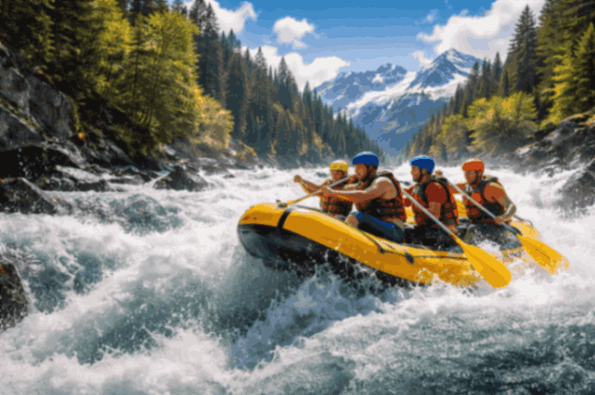
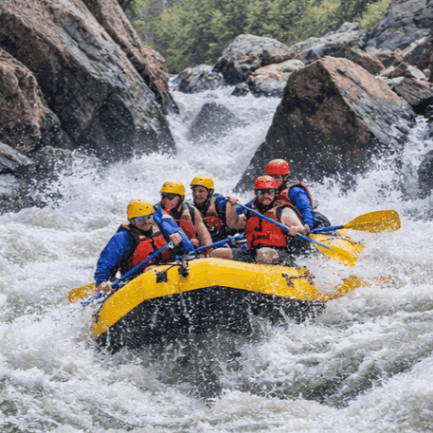
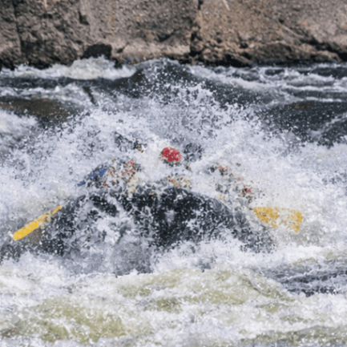
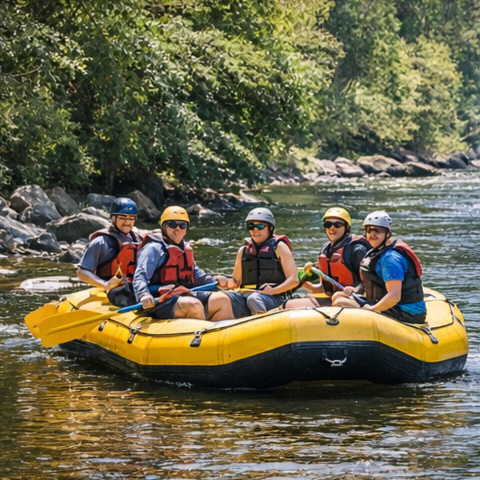
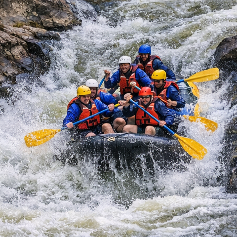
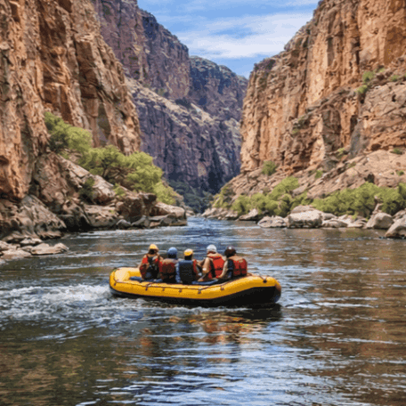

Trips & Adventures
Pick Your Run

Los Dientes del Diablo
Our most intense run. Big drops, technical lines, and nonstop adrenaline.
Includes: raft, paddle, helmet, life jacket, splash gear

Big Mallard
Powerful whitewater and exciting splash zones for experienced paddlers.
Includes: raft, paddle, helmet, life jacket

Half Day Adventure
Perfect for beginners and families with a mix of calm water and fun rapids.
Includes: raft, paddle, helmet, life jacket

Thunder Run
Fast, loud, and unforgettable. Designed for thrill seekers.
Includes: raft, paddle, helmet, life jacket, splash gear

Canyon Cruise
Scenic canyon views with moderate rapids. Great for groups and photos.
Includes: raft, paddle, helmet, life jacket
Trip Comparison
| Trip | Length | Difficulty | Best For | Gear Included |
|---|---|---|---|---|
| Los Dientes del Diablo | Full day | Advanced | Experienced paddlers | Raft, paddle, helmet, life jacket, splash gear |
| Big Mallard | 5–6 hours | Intermediate | Adventure seekers | Raft, paddle, helmet, life jacket |
| Half Day Adventure | 3–4 hours | Beginner | Families / First timers | Raft, paddle, helmet, life jacket |
| Thunder Run | 5–6 hours | Intermediate–Advanced | Thrill seekers | Raft, paddle, helmet, life jacket, splash gear |
| Canyon Cruise | Full day | Easy–Moderate | Groups / Scenic trips | Raft, paddle, helmet, life jacket |